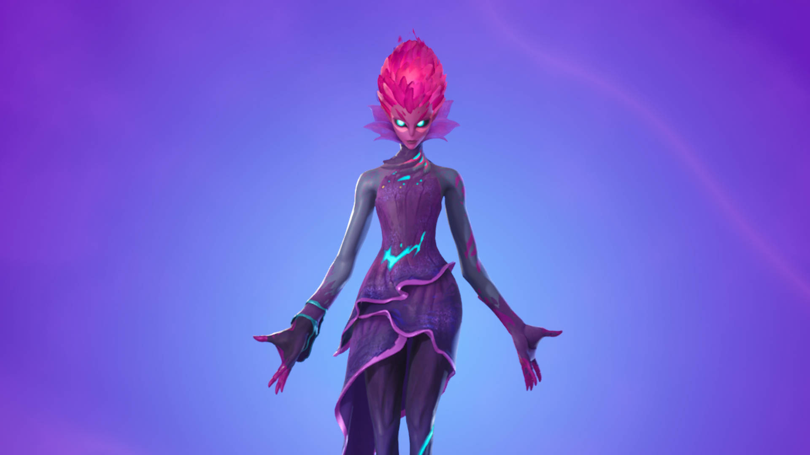
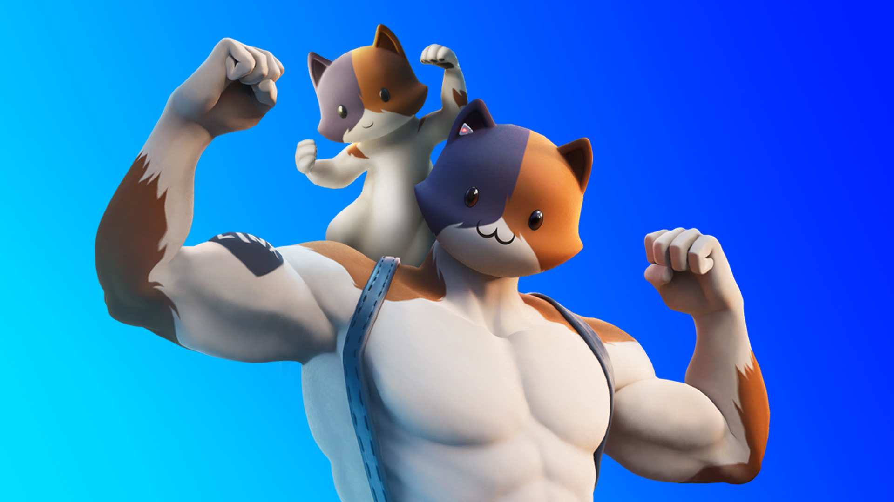
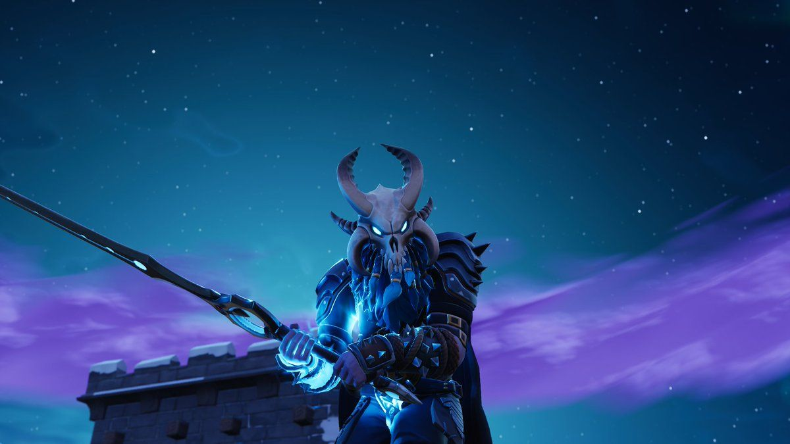

Notable NPCs & Bosses
- Agent Jones
-
A major lore character who often provides quests and narrative direction. In certain seasons, he offers powerful weapons in exchange for bars. Agent Jones has played a key role in the Fortnite storyline, especially in bridging timelines and events. His presence often signals important narrative developments, and players can rely on him for engaging quests and pivotal cutscenes.
- The Herald
-

Seasonal boss found in the Reality Tree area. Drops Mythic weapons and is surrounded by aggressive minions. The Herald is a challenging opponent with area-control abilities, often initiating battles with long-range AoE attacks. Taking her down requires team coordination and provides access to exclusive loot and control over key POIs.
- Meowscles
-

A fan-favorite cat/bodybuilder hybrid. He offers heavy weapons and sometimes acts as a quest-giver near the yacht or gym areas. Meowscles mixes charm with muscle, featuring in multiple Fortnite seasons. His Mythic Heavy AR and Deadpool crossover were standout highlights, making him both a comic relief and a serious ally on the battlefield.
- Ragnarok
-

Can be hired as a guard NPC. Strong, slow, but tanky. Found in icy regions, usually near loot vaults or frozen outposts. Ragnarok provides powerful defensive support when hired. His stoic demeanor and heavy melee-style presence make him excellent for holding zones and protecting revives or objectives late in the game.